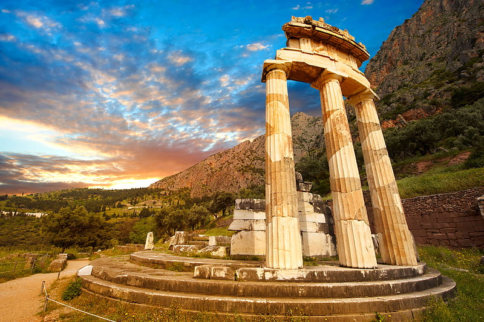

Greece
About
Greece, known for its rich history and stunning landscapes, is a treasure trove of archaeological sites, pristine beaches, and vibrant culture. The birthplace of democracy and philosophy, Greece's cities and islands offer a journey through ancient ruins and myths. Explore Athens' Acropolis, relax on the beaches of Santorini, or delve into the mysteries of Delphi.
Places you should visit
Athens

Athens, a city steeped in history, is where ancient Greece meets the modern world. Visit the iconic Acropolis, explore the historic Plaka neighborhood, and immerse yourself in the city's vibrant culture.
Santorini

Santorini is a volcanic island in the Cyclades group of the Greek islands. It is located between Ios and Anafi islands. It is famous for dramatic views, stunning sunsets from Oia town, the strange white aubergine, the town of Thira, and naturally its very own active volcano.
Delphi
Delphi, once considered the center of the world in ancient Greek religion, is home to the famous Oracle of Delphi. Explore the ruins of the Temple of Apollo and the Delphi Archaeological Museum.